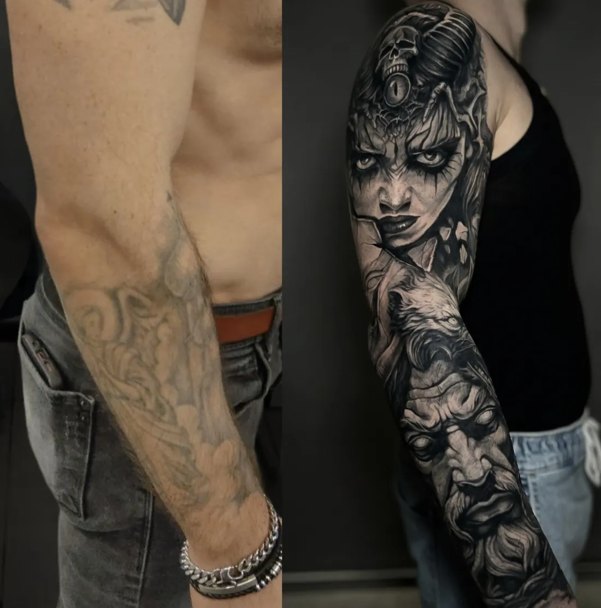
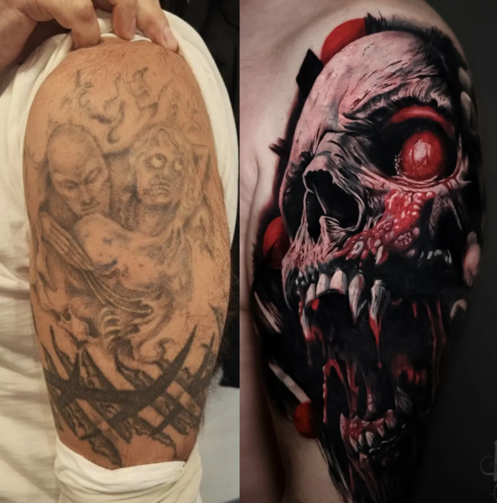
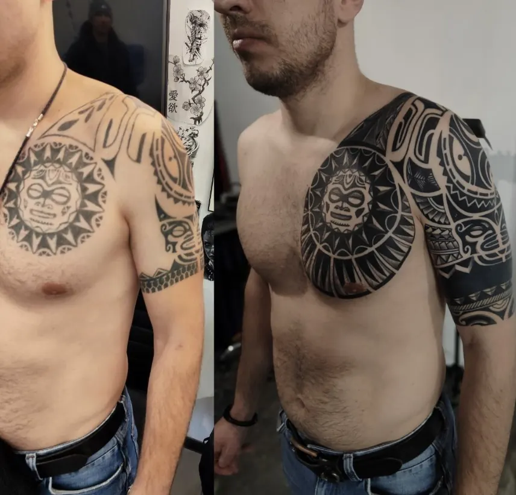

Тату-студия INKSIDE в Минске
Тату на шрамах в Минскенаша специализация ✦
Пришлите фото шрама при дневном свете: мастер скажет, можно ли работать сейчас, и предложит эскиз.
Можно ли делать тату на шрамах?
Чаще всего да, если шрам зрелый: светлый, плоский и больше не меняется. Мастер оценит его по фото при дневном свете.
Через сколько можно делать тату на шраме?
Обычно шраму дают созреть, ориентир - около года после травмы или операции. После операции стоит спросить своего хирурга.
Тату полностью скроет шрам?
Рисунок прячет разницу в цвете и отвлекает внимание, но рельеф может остаться заметным на ощупь и при боковом свете.
Можно ли перекрыть шрамы от порезов на руке?
Да, подход тот же: фото при дневном свете, оценка зрелости шрама и эскиз, который вписывает шрамы в рисунок.
Кому не стоит делать тату на шраме?
Если шрам келоидный или растёт, или есть склонность к келоидам, сначала стоит обсудить это с дерматологом.
Сколько стоит?
От 180 BYN за работу до 1 часа, каждый следующий час 150 BYN, эскиз от 40 BYN. Консультация бесплатная.
Когда можношраму нужно созреть
- Свежийкрасный или розовый, плотный, может чесаться. Рано.
- Около годачастый ориентир после травмы или операции
- Зрелыйсветлый, мягкий, плоский и больше не меняется
Если шрам после операции, спросите своего хирурга. Если шрам растёт или болит - сначала к дерматологу.
Какие шрамыподходят
Обычно подходят
Плоские и светлые. Слегка вдавленные - рельеф становится частью рисунка.
Решаем индивидуально
После операций - после созревания и с согласия врача. От ожогов - только очная оценка.
Сначала к дерматологу
Келоидные и гипертрофические, выпуклые и растущие шрамы, склонность к келоидам.




Это перекрытия старых тату, а не шрамы. Принцип работы с рисунком поверх старой кожи похожий.
Подробнопо темам
Как проходит работа
- Фото при дневном свете. Снимите шрам прямо и немного сбоку, чтобы был виден рельеф. Отправьте в Telegram с парой слов, откуда шрам и сколько ему лет.
- Бесплатная консультация. Мастер скажет, можно ли работать сейчас, и предложит идеи. Иногда честный ответ - подождать.
- Эскиз под рельеф. Рисунок строится вокруг шрама: линии, тени и детали ставят так, чтобы шрам растворился в композиции. Стенсил на коже покажет, как всё ляжет.
- Сеанс и заживление. Одноразовые иглы вскрываем при вас. План ухода по дням, через месяц - фото на проверку.
Какой рисунок выбрать
Лучше всего шрамы прячут рисунки с движением и фактурой: растения, перья, животные, ч/б реализм с плотными тенями. Тонкая графика и fine line по шраму работают хуже: на неровной коже ровные тонкие линии выдают рельеф.
Если шрам на руке, его часто вписывают в крупную композицию на предплечье или в рукав.
Ощущения
Рубцовая ткань может ощущаться по-разному: где-то чувствительнее обычной кожи, где-то наоборот. Делаем паузы, когда нужно. Как ощущается тату по зонам - на странице больно ли делать тату.
Ещё вопросы и подробности · 1
Сколько стоит тату на шраме
Цена считается так же, как у любой работы, по времени и размеру. Перекрытие в калькуляторе на главной считается дороже простой графики. Точную цену мастер называет после утверждения эскиза.
| Минимум, до 1 часа | 180 BYN |
| Каждый следующий час | 150 BYN |
| Эскиз под вас | от 40 BYN |
| Консультация | 0 BYN |
| До 5 см | от 180 BYN |
| 5-10 см | от 330 BYN |
| 10-20 см | от 480 BYN |
| Рукав, нога или большая работа (сеанс) | от 930 BYN |
Итоговую цену мастер называет после утверждения эскиза: важны детализация, размер и место.
Ещё по теме
 Тату рукавуслуга
Тату рукавуслуга Больно ли делать татугид
Больно ли делать татугид Коррекция татууслуга
Коррекция татууслуга Реализмуслуга
Реализмуслуга Цветной реализмуслуга
Цветной реализмуслуга Тату портретуслуга
Тату портретуслуга Мини татууслуга
Мини татууслуга Цены на татууслуга
Цены на татууслуга Главнаястудия
ГлавнаястудияПришлите фото шрамаспокойно и честно
Снимите шрам прямо и немного сбоку при дневном свете и напишите, откуда он и сколько ему лет. Иногда честный ответ - подождать.
- телефон
- +375 (44) 511-19-12